The document management journey, and its tools, on screen
This is user-stories.md rendered as the built product: the owner who decides what a deliverable is described by, the consultant who produces a Land Quality method statement, the colleague who checks it before it leaves the office, and the client lead reviewer who runs the review and accepts it. Every screenshot is the real application, driven live through the whole cycle on the seeded Wrenfield world — nothing is a mockup, and nothing was staged for the photograph. Where the written story runs ahead of the build, the beat is flagged designed, not yet surfaced and points at its ticket, or at the session that ruled it where the ticket is not yet minted.
After the seven acts come the tools — the document creator and the QA checker, each photographed action by action. The owner's ruling of 2026-08-31 widened this page's charter to cover them: a product surface that has never been photographed is a surface nobody has read back. The tools are not user stories and are deliberately not written into one; the journey keeps at most a single beat per tool, saying what happened in the story and pointing into the tool's own section.
Recaptured 2026-08-31 against the e2e substrate (deterministic model providers, seeded corpus).
This page is now the single rendering of the two journeys: the companion decision map
(user-stories-graphic.html) was deleted on 2026-08-18, its accurate content absorbed into the beats and
gap cards below — it had been built from ADRs 0001–0012 and predated the sandbox, binding, internal-QA and
acknowledgement decisions this page is captured against. The second owner-directed walk (2026-08-19 → 22) produced
four rulings which were carried here as gap cards and are now beats: the review period’s owner, the promotion
window, the appointment the named person accepts for themselves, and the review record as one appended table
(T-371–T-375). The drawings that proposed them have been deleted, which is what a mockup is for — the capture is the
record now, and their reasoning lives in the ADR addenda of the same date.
The tools’ two sections were added the same day (T-400), on the ruling that widened the charter. Nineteen of the fifty-nine shots below are theirs. Two beats left the journey to make room for them without saying the same thing twice: the checker’s plan and its coverage statement were beats in Act II and are now the checker’s own section, which photographs both in one frame.
Environmental consultant and lead author at Calder & Hale, the appointed consultancy — and its super-user on this project. Sets the sandbox up, drafts, promotes, answers the review.
Colleague of Eleanor’s at Calder & Hale. Checks her work in the organisation’s own QA round, before anything crosses the wall.
Owner super-user at Trentmoor Energy: defines the project schema, then runs the review group as lead reviewer and holds the accepting code.
EIA Scoping Method Statement — Land Quality, on the Wrenfield–Ashcombe 400kV Connection. Planned, produced, QA’d, reviewed and accepted below.
The plan decides first
Nothing in this journey starts with a blank page or an invented filename. The deliverable, its reference, its authors and its reviewers were all settled when the plan was built — the work starts by picking up what the plan already holds.

Before the plan, someone decides what a plan records
The journey does not open on a deliverable. It opens on Rachel Bowen defining the project’s schema for Trentmoor Energy: which fields make up a document’s coded reference and in what order, which are metadata carried beside it, and which are appointment roles filled per deliverable. Everything downstream — the reference, the plan’s columns, the folder tree, the bind card — reads off this one definition. The schema also exports as a fillable Excel workbook whose header row is the schema’s own attribute fields — the coded and metadata ones, not the appointment roles, because appointments are explicit acts and never a spreadsheet side effect — and which carries no reference column at all: teams draft the deliverables list in a spreadsheet, and the numbering is generated when the plan imports it, never typed in the sheet.

How long a review is expected to take
Beside the schema and deliberately not inside it: ten working days, the project’s default review period. ADR-0005 had always given a round “a configurable review period” without saying who configures it, and the cost showed in the build — the status bar rendered a target date and an overdue state off a column nothing ever set. It sits here rather than as a schema field because the schema’s fields are the header row of the deliverables template teams fill in Excel, and a review period would have arrived there as a column nobody should be completing. Working days are Monday to Friday: no holiday calendar is modelled anywhere in the system, and picking one would quietly pick a jurisdiction.
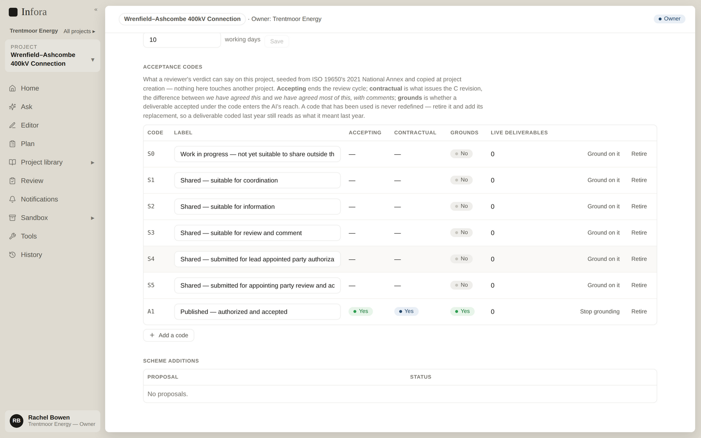
What “accepted” means here, and what the AI may rely on
The third thing settled before any deliverable exists: the project’s acceptance codes, seeded from ISO 19650’s 2021 National Annex and copied at creation, so nothing Rachel does here touches another project. Two columns decide what a code DOES rather than what it is called — contractual, which is what issues the C revision and is the difference between “we have agreed this” and “we have agreed most of this, with comments”; and grounds, whether a deliverable accepted under the code enters the AI’s reach. That second column has to be hers because the standard itself refuses to fix it: the 2021 Annex makes published codes stage-agnostic and requires each A-code’s meaning to be written into the project’s own information standard. Until this slice there was no write path at all, so a pilot firm could not represent its own scheme — a gap that had nothing to do with AI.

One project, behind its wall
Eleanor Price signs in at Calder & Hale and lands on her workspace: the Wrenfield–Ashcombe 400kV Connection, owned by Trentmoor Energy. Three organisations work this project; everything that follows happens inside it, and the wall decides what each of them sees.

The deliverable already exists as a row
WA-EIA-MST-001 — EIA Scoping Method Statement, Land Quality. The reference came from the project’s naming rules the moment the row was created, and the reviewers were named on it. Eleanor did not invent a name and does not decide who reviews her work; that was settled in the plan. The columns beside the title — discipline, suitability, security classification — are Calder & Hale’s organisation standard, set once by its super user for every member: there are no personal column layouts to drift apart.

The row’s detail, on a card
Producer, discipline, revision state, the authoring team, the review group. Rachel Bowen is the confirmed lead reviewer, and access follows that confirmation — a proposal on its own confers nothing. Eleanor sees the full editing set here because she is Calder & Hale’s super user on this project, withdrawal and lead-author reassignment included. The narrower right this card also carries is the one the walkthrough session added: a row’s live lead author, super user or not, may edit the title, the classification and the authoring team, and may propose reviewers — never confirm them, never reassign the lead, never touch the coded reference.
Drafting in the sandbox
Working drafts live in the producing organisation’s private sandbox. They never leak into anyone’s answers, and the v0.x working series never leaves — what the other organisations eventually see is a frozen, promoted revision.

A folder tree, asked for in words
Before anyone drafts, the sandbox needs a shape. Eleanor describes the one she wants and an assistant fills the builder with a candidate tree — or, with no model call at all, she seeds it from the disciplines already on her organisation’s plan. Either way nothing has been created: the proposal lands in an editable builder and only the confirm button writes. That split is structural rather than polite — there is no apply endpoint for the assistant to call, so the only writer is the deterministic one.

Three decisions a team records about itself
Who may create folders, whether that still holds inside a deliverable’s own folder, and whether promotion demands QA acceptance first. These are per-sandbox settings a super user sets deliberately, not preferences that drift: the third one is a governance gate, and turning it off is a visible act with a name attached.

The tree the plan already implies
In plan-locked mode nobody names folders at all: a folder per discipline, a working folder per deliverable, derived from Calder & Hale’s own plan rows and appearing as rows are created. A retitled row renames its folder. A withdrawn row keeps its folder, badged off-plan — nothing is deleted and no work is orphaned, which is the same never-delete instinct that keeps the coded reference immutable. One open question rides this mode: in a sandbox shared across organisations, folder names derived from the whole plan would disclose the shape of the TIDP to everyone granted access. Raised, not yet settled (Q-039).

Binding is a confirmation, never a side effect
The draft sits in WA-EIA-MST-001’s folder, so that deliverable arrives pre-selected — pre-selected, not silently bound. The card shows exactly what the draft is about to wear: the coded reference, the plan row’s title, its schema metadata, the appointments already made on it, and the consequence stated in a sentence before Eleanor commits to it. Binding is one-way.

The draft wears the plan row’s title
The working title is now dormant: the bound draft displays its plan row’s title and metadata by reference, so retitling on the plan retitles the draft and the two can never disagree. The rename control has simply gone from the row’s menu — there is nothing to rename here any more, and the API refuses it too, pointing at the plan row where the title actually lives. The container has been waiting for this document since the plan was built, so promotion later carries no retyping.

Grounded drafting beside the draft
The draft in the Editor, the drafting assistant alongside. Its reach is the project library — the curated set of accepted material the owner trusts — so the text it helps produce is anchored to the project’s real positions, not to whatever half-finished files are lying around.
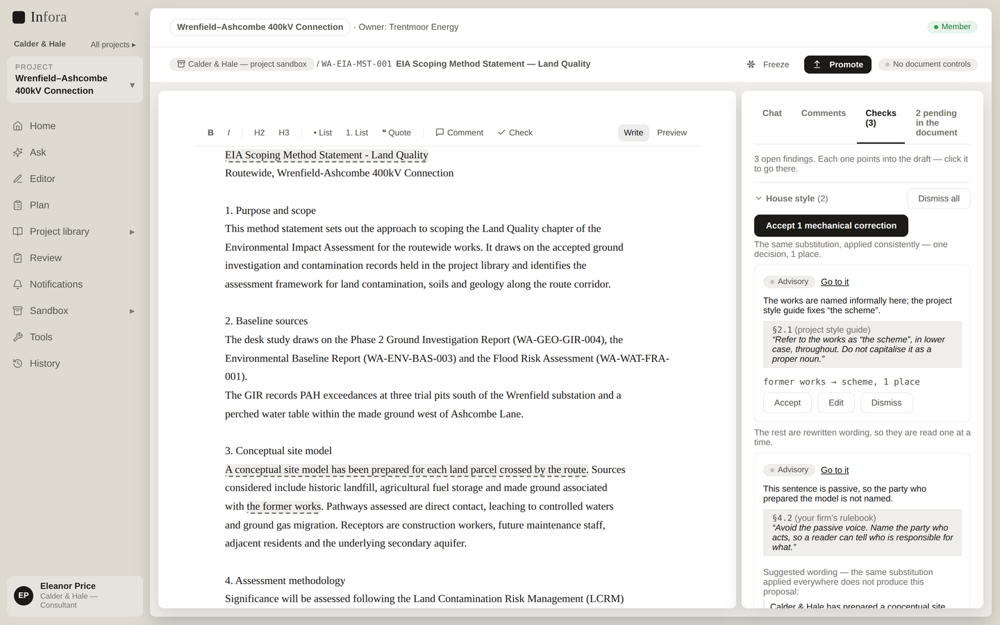
The draft is checked before anyone else sees it
Before the draft goes anywhere, Eleanor runs the QA checker over it from the editor’s own toolbar, and works through what it found. The findings are marks anchored into the text and a panel grouped by the check that raised each one — two views of one set, from one read. She takes the mechanical corrections as a group, reads the rewritten wording one at a time, and clears the rest; nothing is applied automatically, and an open finding would stop the promotion two beats below exactly as an open comment thread would. That is what the story needs from the tool. How the tool itself works — the plan before the spend, the sentence that says what was covered, the accept-all that stops at rewrites, and the banner that appears when the text has moved under a finding — is its own section at the foot of this page, photographed step by step.
The organisation checks its own work first
Internal QA used to be optional ceremony. It is now what this team has decided its work goes through: the gate is on by default for a project sandbox, and with it on, promotion has exactly one legal source — the version internal QA accepted. Read against the ISO 19650 common-data-environment states, this act is Content Check and Approve for Sharing, and it all happens inside Calder & Hale. Nothing here crosses the wall.

The gate refuses, and says so before the click lands
Promote opens a window rather than firing an act, and the window has already asked the server what this click would do. The answer here is a refusal: this sandbox requires internal QA acceptance before anything is promoted, so the source is not legal and Promote is disabled with the reason stated beside it. The gate is a recorded choice rather than a rule of the product — a team turns it off deliberately, and the deliverable below that skips QA does exactly that.

Freeze stops the head moving
Freezing snapshots the working head into Calder & Hale’s own org-private container and locks it: v0.1 in the internal series, and the thing being checked cannot drift while it is being checked. Nobody outside the organisation can see any of this — that container is org-private by scope, not by a filter on the way out. Once the internal reviewer is in place, a second freeze issues the internal revision and opens the round on it.

The same review machinery, pointed inward
Owen Vance checks his colleague’s work on exactly the screen the client’s reviewers will use later: the same anchored comments on the same rendered PDF, the same coded scheme, the same record. The page states what it is — an org-private internal review whose record never crosses the wall — and it carries no coded reference, because an internal check is not a revision of anything the project has seen.

An internal verdict, on the organisation’s own record
Owen closes the round with a verdict. Accept, and the frozen version becomes what may be promoted; ask for revision, and it goes back to the authors — who can answer, because the internal container carries the plan row’s authors as well as its reviewers. One thing visible in this shot is wrong, and is left in rather than cropped out: the modal still speaks the project review’s language, promising that the code “enters the project library”. Nothing of the sort happens here — an internal acceptance only unlocks promotion. The mechanism is right for an org-private round; that sentence is not.

The window reconfirms; it does not compose
ADR-0008 made promotion a near-empty hand-off on purpose, because a form filled in the moment is a form filled wrong. This window survives that objection by splitting the fields rather than by tone. What promotes is named and read-only — the version internal QA accepted, and who accepted it, because the whole point of the gate is that the client receives the version that was checked. The plan-owned identity is shown and locked, so a thoughtless confirm produces exactly the plan’s state. Only what is already Eleanor’s to set takes input: the authoring metadata, the review group with its lead, and the review period. From the producing side every reviewer control writes a proposal — naming someone in another organisation proposes them and nothing more, because confirmation stays owner-side (an owner-side naming confirms outright, as owner grants always have), and that is why a producing organisation cannot open the wall from this window. Changing the lead reviewer is one act, not a remove-then-name pair — the swap either happens whole or not at all, and the window states the wait it buys before the click commits it. It reopens at every promotion, which earns its place at round two more than round one: six months and a staffing change later, the alternative is silently inheriting a review group named at planning and never looked at since.

What promotes is what QA accepted
Promotion succeeds now, and says which of the two legal sources it took: the QA-accepted frozen version, not the head as it has drifted since. That distinction is the whole point of the gate — the client receives the version that was checked. One acceptance buys exactly one revision, so version two below runs its own internal pass rather than quietly re-issuing the same content under a new number.
Promotion opens the round
Promotion freezes an immutable P-revision, generates the PDF that will be reviewed, keeps the native file in the same container, and opens the round. From that moment the review belongs to the review group — and the authoring side sees none of it until the lead issues.

P01 submitted, awaiting acknowledgement
The submission, from the producing side: Infora froze P01 out of the window above, rendered the review PDF beside the native file, and sent round 1 to Trentmoor. The four-state bar says exactly where the deliverable stands — submitted, and not yet in review, because the round does not open on the promoter’s click. It opens when the lead reviewer accepts the appointment and acknowledges the submission — or, with the lead away, when a Trentmoor super user acknowledges in their stead — which is the next two beats and neither of them is Eleanor’s to make.

The person named says yes for themselves
Appointment used to be something two organisations did about a person: Calder & Hale proposed Rachel, Trentmoor confirmed her, and nowhere in the model did Rachel say anything at all. But a lead reviewer holds the deliverable’s contractual verdict, and nobody can give that undertaking on someone else’s behalf. So the card states the duty in four lines — the code on every round, the close that only she can make, the accepting code, the review group — and asks. Nothing about tables or grants: a professional undertaking should be readable by the person giving it. Until she accepts, the Acknowledge button above is disabled for everyone, a Trentmoor super user included, because the override covers the receipt and never the undertaking. Nobody told her: notifications are deferred, so she finds this by opening the deliverable, and the submission simply waits longer.

The submission is acknowledged into review
Rachel was named lead reviewer in the plan and has accepted the appointment, so the submission is hers to receive. Acknowledging it opens the round for the review group — a recorded receipt with a name on it, not a formality. Who may fire it is narrower than the shot suggests, and deliberately so: the act belongs to the lead reviewer alone, or to a super user of the owner organisation when the lead is away. It was briefly wider — an addendum of 2026-08-06 extended it from the owner organisation to any live confirmed reviewer, because gating on the owner alone would park a round behind a firm with no stake in its pace — and the narrowing of 2026-08-22 answers that reasoning rather than discarding it: it does not gate on the owner organisation either, but on the lead reviewer, who may sit outside it and who fires the receipt in the ordinary case. What went is a non-lead reviewer signing for a submission they do not run. The override covers the receipt and never the undertaking: until a lead has accepted, nobody may acknowledge at all, the super user included, and their move in the face of an absent lead is to re-appoint.

Comments are made where the document is read
Rachel selects the text she means on the P01 PDF and writes the comment alongside, coded on the project’s acceptance scheme. The anchor — page, quote, quads — is stored on the comment itself, bound to the immutable version, never a sidecar file.

One shared, live review record
Three comments, each pinned to the exact place it refers to, each coded, all landing in one record the whole review group sees as it is written — across organisations. Nobody is assembling a spreadsheet, and nobody is guessing what “page three, paragraph four” refers to. The openness is bounded rather than general: it runs to the appointed review group and stops at its edge — open across organisations inside the group, invisible to the project outside it.

The same round, from the authoring side: nothing
While the round is open, Eleanor sees the round exists and nothing of its content. The open round’s comments are reviewer-side state, withheld until the lead issues — enforced in the server’s read, not by the client hiding fields. What she is blind to is exactly one round, and that is a guarantee rather than a coincidence: a deliverable carries one controlled revision in flight at a time, so only one round is ever open, and every round but this one stays permanently readable to her. Writing alternates with it — while the round is open only reviewers may write, and the pen crosses back at the transmittal.

The wall is a different record, not a hidden column
The same review record Rachel is writing into, opened by Eleanor. Round one is present as a band — the round is not hidden, and its existence was never the secret — but it has no rows, and the notice says content exists and why it is out of reach. That is the house rule rather than a stylistic choice: greying the rows out would leak how many there are, and rendering an empty round would say something false, because silence reads as absence and absence is a different fact from “not yours yet”. Even the header counts only what Eleanor can actually read. The withholding is applied in the server’s read, so no client can undo it.
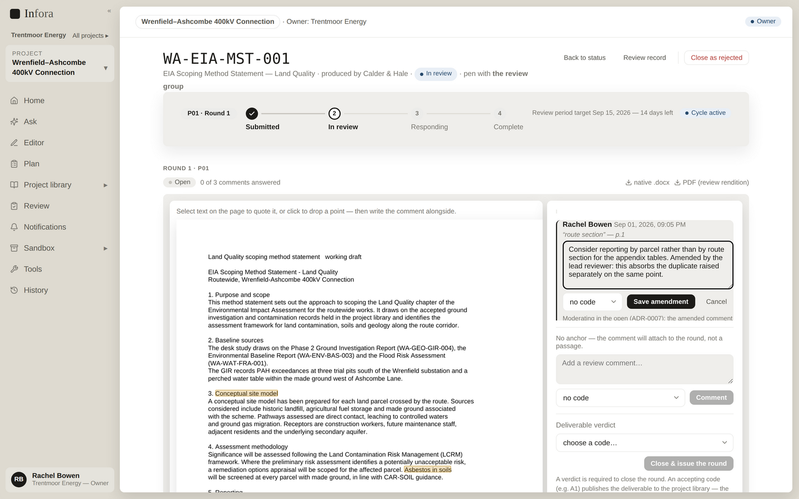
The lead moderates in the open, and cannot moderate in secret
Rachel amends a reviewer’s comment to absorb a duplicate and shape the group’s single position before any of it goes back. Two constraints make “in the open” true rather than claimed. There is no delete — a duplicate is amended to say so, never quietly emptied — and moderation is possible only while the round is open: issue freezes the snapshot, so what Calder & Hale eventually receives is the record as Rachel left it, once, and nothing can be edited behind an issued verdict. The amended comment is the record; there is no “original” hidden underneath it, because a moderated record with a shadow copy would be two accounts of one review.

Each reviewer states their pass is done
“Review complete” is a stored, round-scoped signal — a reviewer with nothing to say is done, not absent. The set freezes when the round issues, and no count of completions closes anything: closing stays the lead’s human act.
Issue, then answer every comment
Closing the round is a verdict, not a timeout. The record is issued to the consultant, and version two cannot leave until every comment carries a response — a change declared in the next revision, or an explicit no-change with a reason. There is no third state.

One authoritative code closes the round
Rachel sets the deliverable verdict — C, revise and resubmit — and closes the round. The review snapshot freezes on the record, the transmittal issues it to the authoring side, and only now does Calder & Hale see the comments. Nothing is sent anywhere: the transmittal is an event record — who issued which version to whom, and when — and no file moves on the platform, because both organisations were always reading the one record.

Point at the change, or say no change and why
For each comment Eleanor writes a response and declares the revised passage that answers it. The version that passage lands in does not exist yet — promotion is gated on the responses — so the link is declared now and the system stamps the version id when promotion creates it. Nor is this Eleanor’s alone: the pen passes to the authoring side the plan named, lead author and authors together, so several of Calder & Hale can work the returned comments at once.

Three comments, three answers, no silence
Two changes declared, one explicit no-change with its reason on the record — the route-section point is reconciled by hand, not merged silently. Promote refuses while any comment is unanswered; the mandatory-response rule bites the transmittal back, not a dialog. The rule pays twice over: every comment now leaves the round paired with the response that resolved it, and that pairing — not the prose either side wrote — is the comment-to-resolution material the moat distils.
Acceptance makes it true
An accepting code is the contractual act: the work item closes, the accepted revision becomes the controlled record, and the deliverable passes into the project library — from now on it is part of what the project treats as true, and retrieval grounds on it.

Version two arrives already reconciled
Version two arrives and the working screen stays on the round under review: round 2, freshly acknowledged, no comments yet — the reconciliation Rachel will read sits in the record one click away, which is the next beat. P02 took the same road as the first version, through its own internal QA pass, because one QA acceptance buys exactly one revision; and round 2 opened the way every round now opens, on acceptance and acknowledgement, not on the promoter’s click.

One table, appended to — not a sheet per round
The chapter’s whole review history in one scroll: every comment in order with where it sits, its code, its author and the response that answered it, round one closed off by the deliverable code it concluded with, round two appended to the same table rather than opening a new one. This is what the Excel review notice could never do, and the reason ADR-0009 refused to materialise a second artifact from the record. Each answered comment’s response either points at the change — “Changed in P02”, with the passage — or states explicitly that none was made and why; a response written before its promotion reads “change prepared for the next revision” until the stamp lands (ADR-0004’s declare-now, stamp-later). Round two carries a band saying it has no code yet, because an open round with no verdict is a state rather than a gap, and no count of comments will ever fill it. There is no download, no “issue the record”, no print button anywhere on this screen: the DRN was dropped and a button here would quietly reinstate it.

The accepting code, stated in full
The chapter meets the standard the client is paying for. The modal says exactly what the accepting code does before Rachel commits it: the contractual revision is issued, the deliverable enters the project library, the review is complete — no further edits.

The controlled record, apart from the material it was drawn from
WA-EIA-MST-001, revision C01, live in the project library. It is now project knowledge: the drafting assistant grounds on it, citations resolve into it, and the wall still decides who reaches it. The ground investigation and baseline reports it was drafted from are on the same page and in a different table — Reference material, received rather than produced here. Both ground and both are cited the same way; only one of them is this project’s record of its own work, and listing them together would let a corpus quietly launder itself into the record it exists to support.

Complete
Submitted, in review, responding, complete. The work item is closed and the cycle ran to acceptance without a review spreadsheet, a chased document controller or an emailed comment sheet anywhere in it.
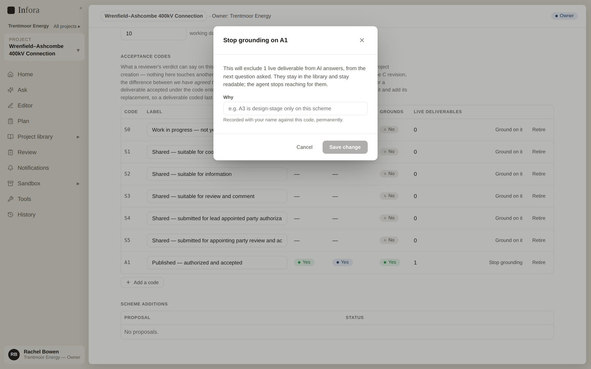
The consequence, before the click rather than after it
Back on the scheme, and now A1 has actually admitted something: the row carries the count, and turning the code off states it — this many live deliverables leave AI answers, from the next question asked. It is not a checkbox because the damage it can do is invisible: every citation that already exists still resolves, so a project that quietly stopped relying on half its library would look exactly like one that had not. The change is recorded the way a rails change is, with a reason in Rachel’s own words, because who and when a timestamp already gives. And the promise about “the next question” is only honest because retrieval reads the flag live rather than caching a composite answer — the surface and the query had to agree, and this is the side making the claim.
Ending a deliverable that is no longer current
The journey does not end at acceptance, because a project outlives its documents. A study is overtaken, or found wanting, and the question is what stops — and what deliberately does not. Nothing is deleted and nothing becomes unreadable; what ends is the AI reaching for it silently.
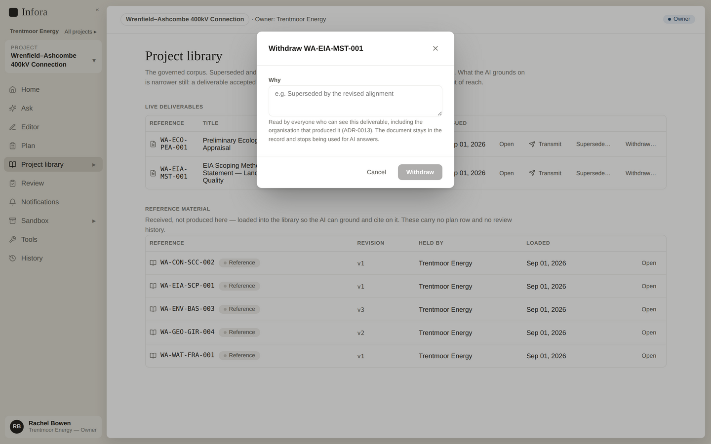
The button that did not exist
Until this slice nothing in the product set a deliverable superseded, and withdrawal reached only a producer’s own unpublished plan row — the same word for a different act. Authority now follows the publication boundary rather than the party: before publication the record is the producing organisation’s, and once published into the owner’s library it is the owner’s, with the producer pressing the same control to PROPOSE instead. The reason is mandatory, and it is mandatory because of who reads it: visibility follows the container, so the firm whose work this is reads why its deliverable was ended. A deliverable that stops being relied on with no explanation is a decision nobody can audit.
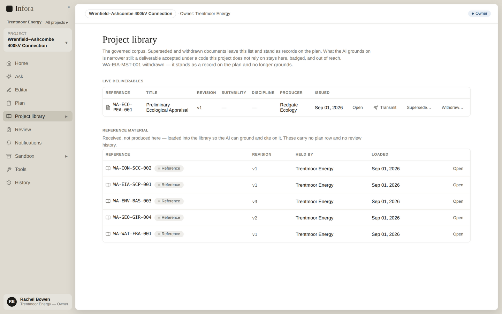
It leaves the corpus, not the record
The deliverable is gone from the governed corpus and stands as a record on the plan, exactly as it did a moment ago except in one respect: the AI has stopped answering from it. Restoration is no longer symmetric — the container records which side withdrew it, and only that side may undo it, or the owner over a producer’s act. As built, either party could restore what the other withdrew with neither act recording the other, which is a disagreement the record could not show.
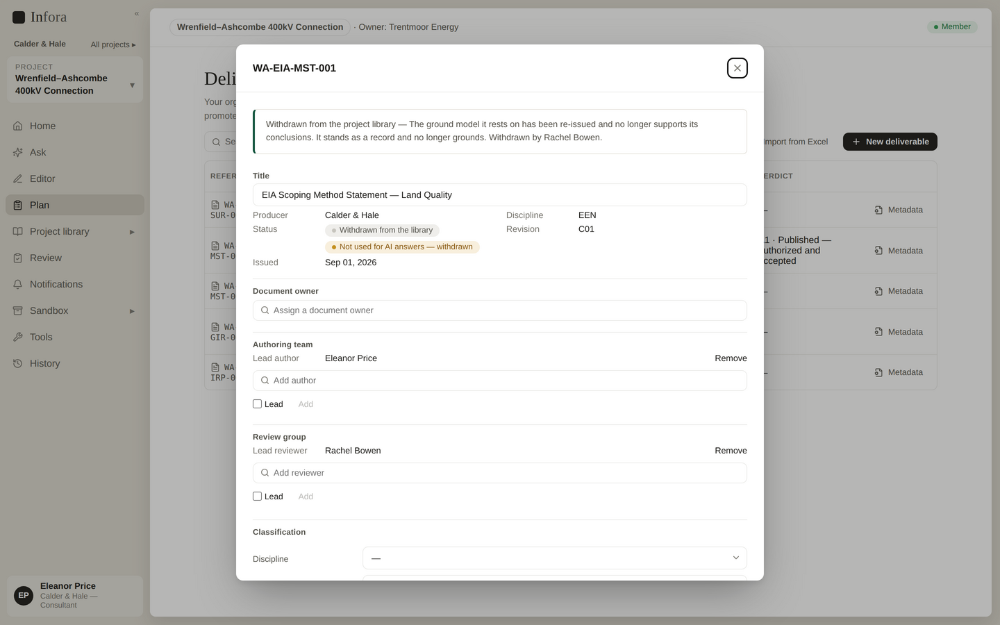
The badge names its reason
From the producing side: the row is still there, still readable, and now carries a second badge beside its status — not used for AI answers, and WHY. The distinction matters because there are three different reasons a deliverable can be out of the agent’s reach, with three different responses: superseded by another document, withdrawn with a reason, or accepted under a code this project decided not to rely on. Context state is derived from those three conditions and never stored, because a flag that could be set independently of its inputs would give the platform two state machines that could disagree — invisibly, since every citation would still resolve. And it is not access: anyone who could read this deliverable still can, and may pin it deliberately as an attached source, where the same marker travels with it.
The tools
Two standalone tools, each photographed action by action. They appear on this page without a user story of their own because they do not have one and should not: user-stories.md follows a single deliverable through its life, while a tool is a thing a consultant opens on any day against whatever is in front of them. They are here because a product surface that has never been photographed is a surface nobody has read back — the owner's ruling of 2026-08-31, which widened this page's charter from the journey to the journey and the tools.
The document creator
Instead of opening a blank editor, you build a document: say what kind of document it is and what language it should be in, choose the style guides it follows, compose its outline section by section, pick the library documents it may draw on — then read the document it proposes to write, correct anything wrong with it, and only then accept. The order is the design rather than a form’s field order: the sources are chosen ahead of the drafting, so the result can be checked against what was asked for rather than against whatever retrieval happened to find. Re-cut on the owner’s own review of these photographs (2026-08-31): “shape” retired, the outline became something you build, the plan became the document it proposes, and drafting was given the project’s writing rules for the first time.
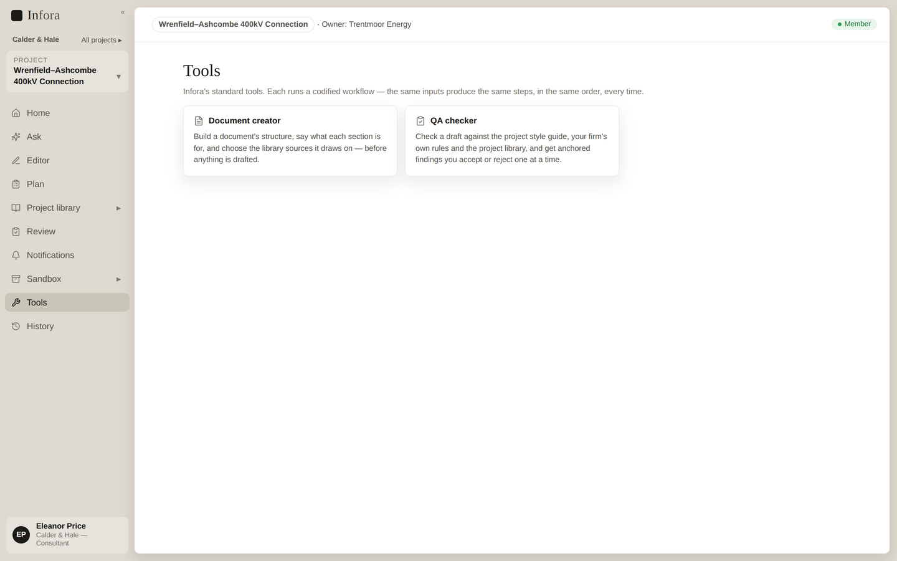
Two tiles, and a third tool with none
Tools holds Infora’s standard tools, each with what it does written under its name: the document creator and the QA checker. The list is assembled for the person asking rather than filtered on the way out, so a tool somebody cannot use is absent from this page rather than sitting on it disabled — the section can never advertise a capability the viewer has no way to reach. There is a third built tool, the extractor, and it has no tile at all: what a user would pick first, and where its output would land, is an unruled design question, and a tile promising a screen nobody has designed is worse than no tile.
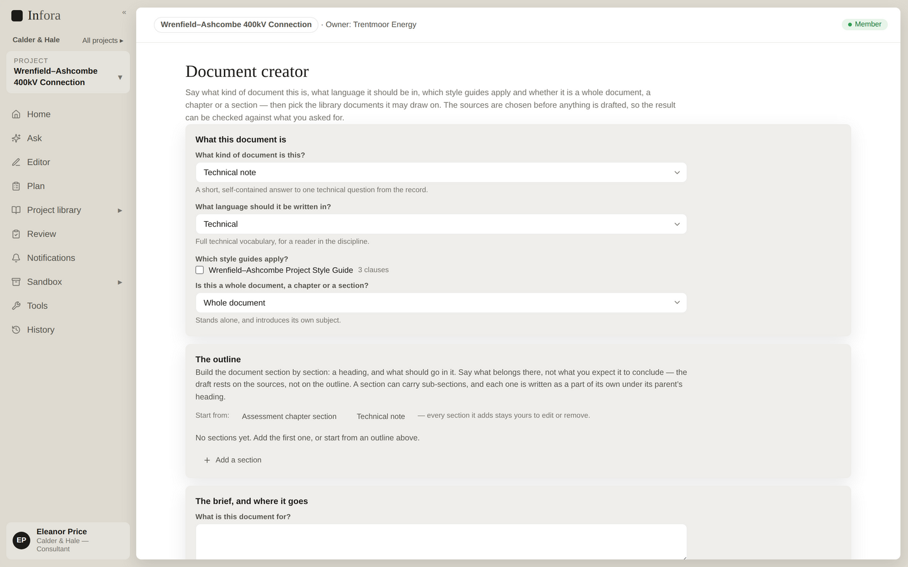
What it asks, before anything is drafted
The launcher as it opens. It used to ask for a “shape”, which meant picking one of two templates and told an author nothing about what they were being asked; it now asks four plain questions — what kind of document this is, what language it should be written in, which style guides apply, and whether it is a whole document, a chapter or a section — and then lets the outline be built rather than chosen. Nothing has run and nothing can yet: the only button is See the plan. The answers survive being shown a plan, so a change of mind about one does not mean re-entering the rest; what a change does discard is the plan itself, because a plan is about the inputs it was computed from and a stale one shown beside changed answers would be a lie the reader cannot see.
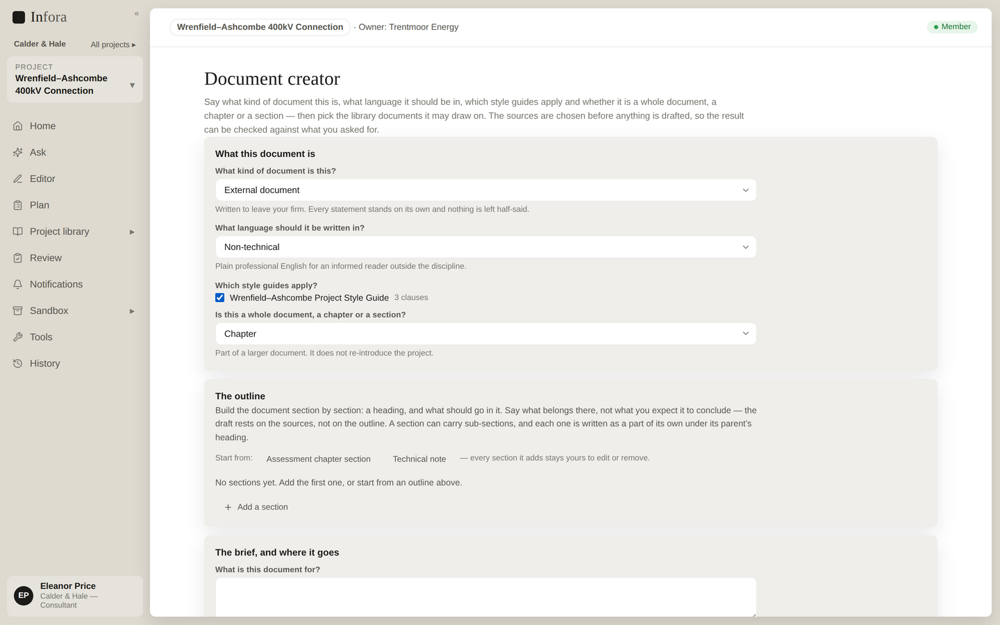
Four answers, each explaining itself
An external document, in non-technical language, as a chapter — and the project’s style guide selected. Each control carries the chosen option’s own sentence beneath it, because External document is a category and written to leave your firm; every statement stands on its own is what choosing it does. The style control is the one that changed most underneath: until this pass the thing that wrote a draft was never shown the project’s writing rules at all — they existed only for the checker to mark a finished draft against, which meant the product could tell you that you had broken a rule it had never told the writer about. The selected guides’ clauses now travel into the drafting call verbatim, and where a guide and the language answer disagree the plan says which wins before anything runs: the guide on terms and vocabulary, the language answer on register. More than one guide may apply; a project with none loaded shows the control honestly empty rather than hiding it, and a project whose guides could not be read says that instead, because those are two different facts.
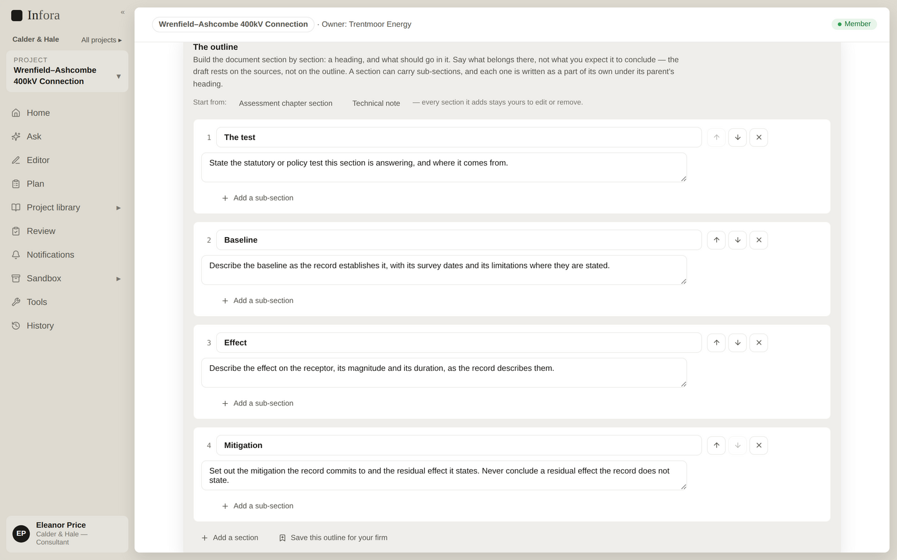
The outline is composed, and a template only starts it
The outline no longer arrives ready-made. Eleanor builds it section by section — a heading, and what should go in it — and the two shipped outlines survive only as a way to begin: pressing Assessment chapter section fills in its four parts, whose per-part guidance becomes four editable section purposes. The list starts empty on purpose, because an outline that pre-filled itself would be a ready-made shape wearing a new name. What a purpose says is scope, never a conclusion: an outline that told the drafting call what to find would make every document agree with its outline rather than with its sources, and that rule did not stop mattering when the words became the author’s.
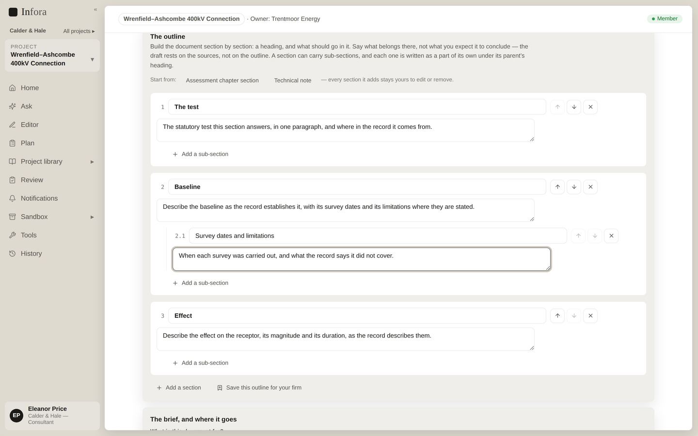
Seeds, never locks — and a section that carries sub-sections
The first section’s purpose rewritten in Eleanor’s own words, the last section removed outright, and a sub-section added under the baseline — numbered 2.1, with its own heading and its own statement of what belongs in it. A sub-section is a section of its own: it is drafted separately, it gets its own description on the plan, it is counted in both coverage sentences, and the finished document carries it under its parent’s heading. What it has that a top-level section does not is a parent. One level, and one level only, which the code enforces by giving a sub-section no nesting of its own rather than by asking every reader of an outline to remember the rule. Every section a starting outline puts on screen is as editable and as removable as one typed by hand — which is the whole difference between a starting outline and the shape it replaced. Sections carry their own headings from here, and the assembly writes them into the document as markdown headings rather than as bare lines: the checker’s reader guesses at an unmarked heading by its length and its punctuation, and a heading a person actually typed — 3.2 Baseline conditions, including the 2025 survey. — breaks every one of those guesses.
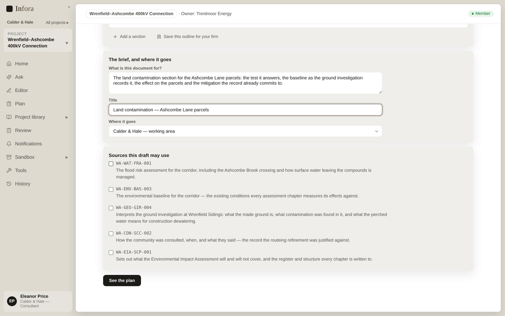
What it is for, and where it goes
The overarching brief in her own words, the title, and the working area it will be written into. The brief governs the document as a whole; each section’s own purpose governs that section, and the two are separate answers rather than one answer doing both jobs.
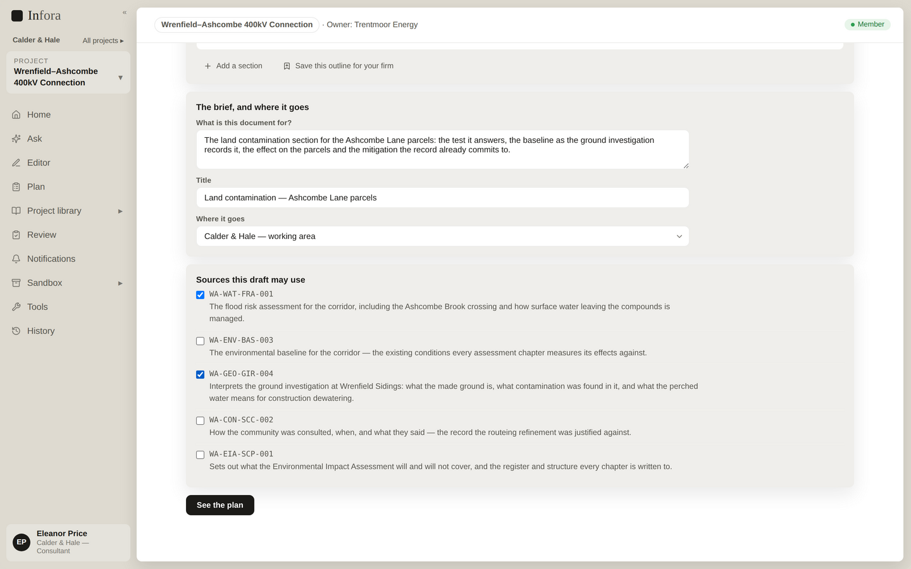
The sources say what each document is
Two of the library documents Eleanor can reach: the ground investigation report and the environmental baseline. Each row now carries the document’s reference, its title and a sentence saying what it actually is — a coded reference identifies a document, it does not say what is in it, and choosing sources off references alone was choosing blind. The description is typed by whoever filed the document and is never generated: a model-written description would be an uncited claim about a document sitting on screen beside that same document’s grounded content. Where nobody has written one the row says nothing rather than inventing something. Binding them here rather than letting the run go looking is what gives the draft an explicit source manifest, checkable against the document afterwards; and the list is the one her access resolves to, so a document she could not reach is absent rather than greyed out.
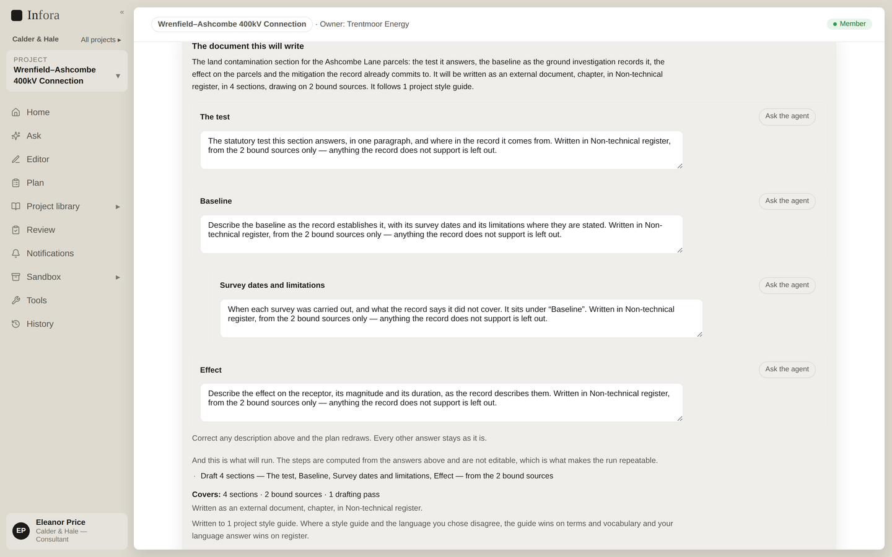
The plan is the document it proposes
The plan page stopped being a list of machinery. It now sets out the document about to be written — a short overview of the overarching instructions, then, section by section, a short description of what will go into each — and every one of those descriptions can be corrected in place before anything runs. What is being corrected is a parameter of the run, exactly like the four answers above, and the plan is recomputed from it. That distinction is doing all the work: the step list underneath is computed in code, is editable by nobody, and regenerates when a description changes, so the run stays a declared one and no step list is ever hand-edited.
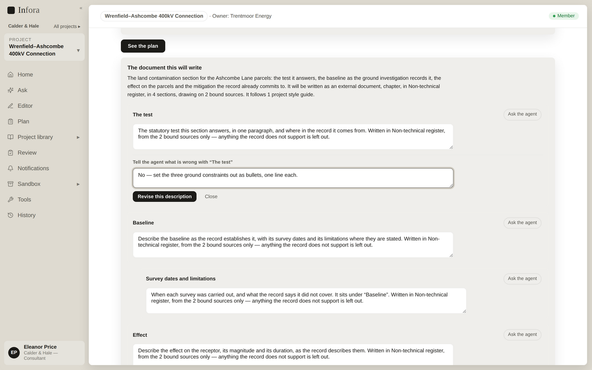
Or tell an agent what it got wrong
Beside each section, a chip opens a pane targeted at that section alone: say what is wrong with its description — no, set the three ground constraints out as bullets — and an agent rewrites it. It is reached per section rather than per document, because an agent told “the second one is wrong” about a whole plan is an agent guessing which one. The pane reads no project material at all: not a source, not a document, not the library. A description of what a section will contain is an instruction, and an agent that reached into the record to write one would be drafting the document a step early — ungrounded, uncited, and in the one field that then steers the grounded call.
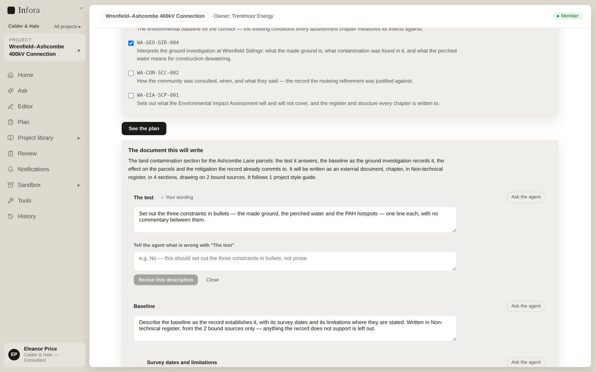
One door into a parameter
The revised description in place, marked Your wording so a corrected page never reads as one the planner wrote — and the other sections untouched. The agent proposes and the surface applies, through the very same code path a typed correction takes, so there is exactly one way a description can change. That is not tidiness: two ways to change a description would be two chances for them to produce different plans, and the guarantee this tool is sold on is that the same inputs give the same steps. The step list after the agent’s tweak is byte-identical to the step list after the same edit made by hand.
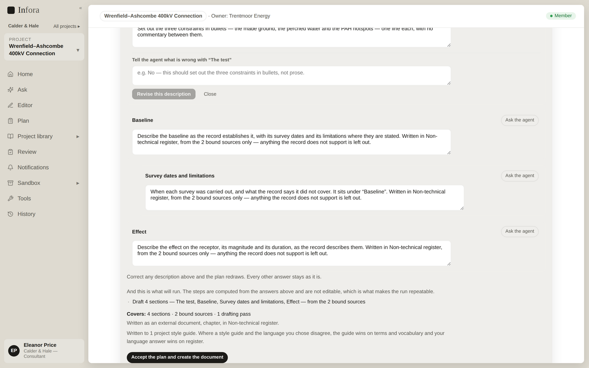
And what will actually run
Below the proposed document, the steps themselves: one drafting pass over the composed sections from the bound sources, what the run will cover, and what it will do that the step list cannot show — the register it is writing in, the guides it follows, and which wins where those two disagree. There is no price anywhere on this page any more. It was there deliberately, and it came off deliberately: the estimate is still computed and every step still records what it spent, as an audit and operations fact — it simply stopped being shown to the person launching the tool. The chip at the bottom is what accepts the plan and creates the document.
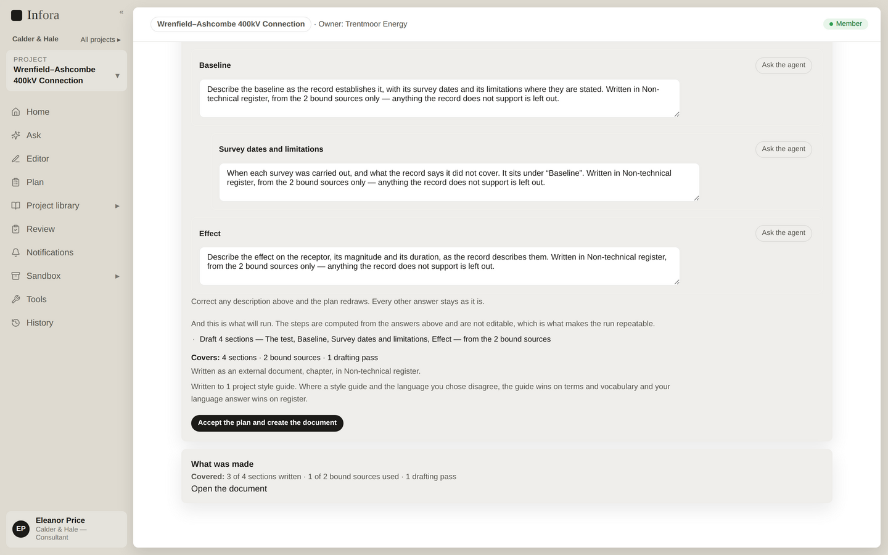
The same sentence afterwards, with what happened in it
The run finishes and its coverage comes back in the same shape it took before — sections written of sections planned, sources used of sources bound, one drafting pass — with the absences the document itself cannot show appended: sentences withheld for resting on no source, and anything written outside the outline and therefore left out. Reading the two lines against each other is the whole design: three sections becoming three of three sections written is a fact the reader meets rather than something to go looking for. The count is of sections of the outline and of nothing else. It used to include material the drafting call wrote before any heading, which the assembly correctly never writes into the document — so a run that produced an empty document once reported one of four sections written, on the one surface whose entire job is to be the difference between a clean result and an unexamined one. Where that material exists now, the sentence names it instead of counting it.
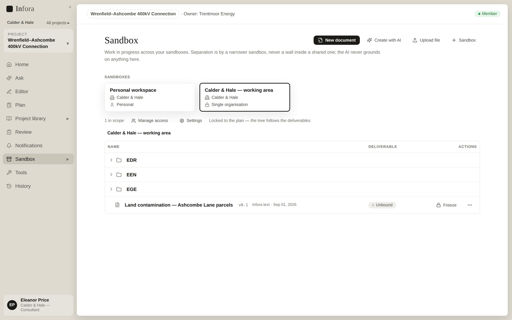
Where it landed
The working area named in the launcher, with the new draft in it: v0.1, unbound, sitting at the root of the plan-locked tree beside the discipline folders. It is an ordinary sandbox document from the moment it exists — it can be edited, checked, bound to a plan row and promoted exactly as a hand-written one can, and the tool has no privileged write path of its own.
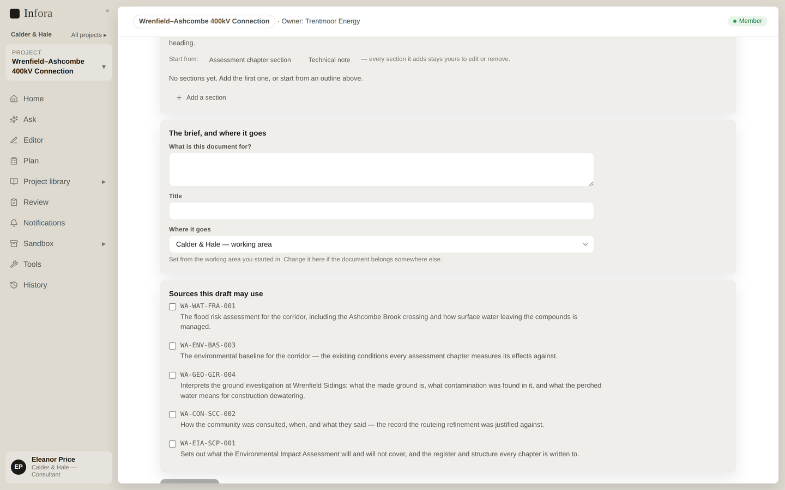
Started from where the document belongs
The creator has a second front door, and it is the working area itself: Create with AI in the sandbox opens this same launcher with the destination already set to the location you were standing in, and says so under the control rather than leaving a pre-filled answer to read as your own choice. It stays changeable — one launcher, starting on a different answer, not a second screen with a fixed one. This beat replaced a refusal. Arriving at the creator from a deliverable in the owner’s plan used to render a screen naming an open design question: whether a plan row should seed the document’s structure. The owner ruled that question on 1 September by cutting the link rather than by deciding what may cross it — you never start the creator from the plan — so the refusal has nothing left to refuse, and the door that does exist is the one worth photographing. The doorway carries the location and nothing else: no deliverable, no title, no reference, because a doorway that passed those along would re-open at the back what the ruling closed at the front.
The QA checker
Read a draft against the writing rules that bind it and the project record it rests on, and get findings anchored in the text that a person takes or leaves one at a time. Its tile stands beside the creator’s in the Tools shot at the head of the section above — one page, two tiles, and a second photograph of it would have been the same picture. The draft below is a working copy of its own: by this point in the story the journey’s draft has been frozen, promoted, reviewed and accepted, and a frozen head is read-only, while everything here rewrites the text it works on.
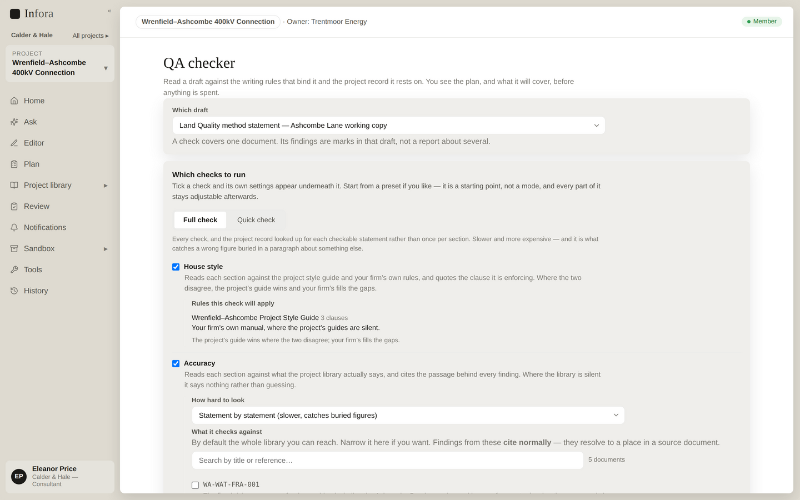
One document, chosen first
A check covers one document, and the screen says so: its findings are marks in that draft, not a report about several. The same launcher opens from the editor’s Check button with this first step already filled in — one run shape, one place the scope is stated — rather than a second, quieter path that would run a check with no plan and no coverage statement. Below the draft, the launcher opens on the full check rather than the quick one, deliberately: a too-cheap default fails invisibly, and a too-expensive one fails visibly. The two presets are one switch with two positions, not two buttons, because the choice is one or the other and never both — a pair of buttons said “two things you could do” where the truth is “you are in one of these two”. The five checks read as a plain ruled list rather than as five bordered boxes stacked inside a bordered card, which was much of what made this screen feel cluttered. And the draft picker stops at a readable width instead of stretching the whole pane: an input that runs the full width of a wide screen reads unfinished, and puts a long empty distance between its label and where you are typing.
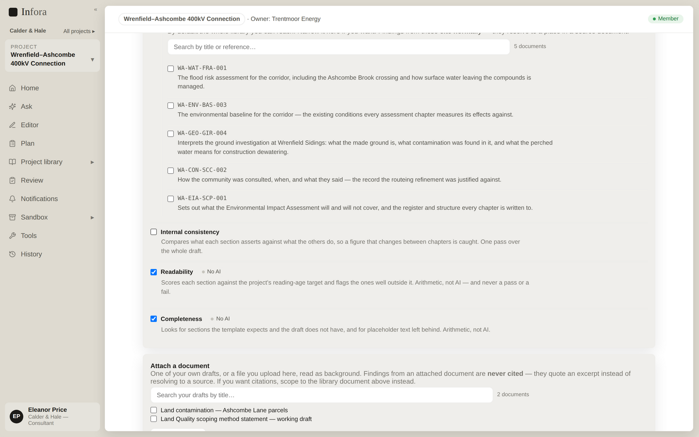
Tick a check, and its own settings appear under it
Eleanor takes the quick check and then turns one check off by hand. A preset sets the five checks and the record’s search depth together, as one honest choice, and every part of it stays individually adjustable afterwards — which is why the internal-consistency box can be cleared without leaving the preset. The five checks read as a plain ruled list rather than five bordered boxes stacked inside a bordered card, which was much of what made this screen feel cluttered. Two of the five say No AI on their face: readability and completeness are arithmetic, they cost nothing, and a checker described as so many model calls would have been describing half of itself. Each check now carries its own options, unfolded beneath its own tick, and nothing appears under a check that is switched off. That is a correction the owner made by reading the previous photograph: how hard to look at the project record is a property of the accuracy check alone, and the screen had been showing it as a global setting at the foot of the card — so it read as though it governed all five. It now sits under Accuracy, where the design always put it, and there is no global settings block left for the next option to land on. Ticking house style shows which rules will actually be applied — the project’s guides by name, and the firm’s own manual filling the gaps where they are silent — because that check does not offer a choice and a screen that said nothing would leave the author to guess.
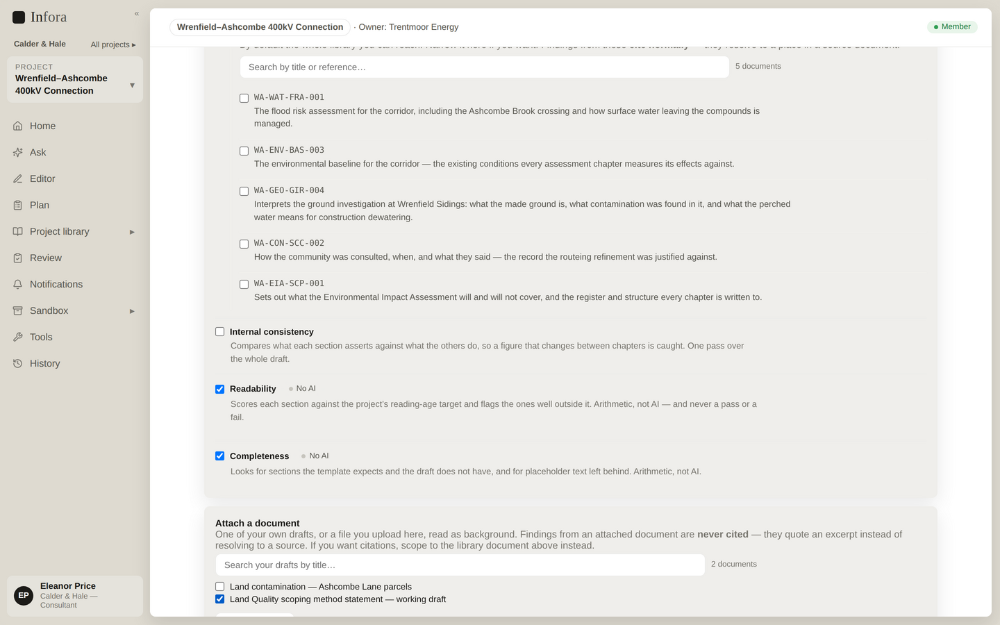
Three ways to give it something to read, and two different guarantees
The document controls are named differently because they are two different guarantees, and the copy under each says which you get. Both now carry a search, and both show titles rather than coded references alone — a reference identifies a document, it does not say what is in it. What each search runs over is the list already on the page, and that list was resolved against the wall on the server before it was sent: the library scope is the same access-resolved set a grounded answer would draw on, and the attach list is the requester’s own drafts. So a document out of reach is not greyed and not ranked low — it never reached the browser, and no search can bring it back. A search that asked a server to find matches and then hid the unreachable ones on the way out would disclose that they exist by the shape of what came back, which is the failure this design forecloses rather than guards against. The library scope has also moved: it now sits under the accuracy check, which is the only check it governs. Narrowing the library scope yields findings that cite normally and resolve to a place in a source document; attaching a document yields findings that are never cited and quote an excerpt instead. Attaching a library document would silently take the weaker path, which is why neither control is called “choose a document”. T-399 filled the gap this beat used to photograph: a file can now be handed straight to the check, and it takes the second guarantee rather than a third — an attachment is an attachment however it arrived. The copy under the upload control makes the other promise the ticket turns on, in plain words on the screen and not only in the record: the file is read for this check and kept nowhere afterwards, the record keeping its name, size and content hash and never its text, so running the check again means attaching it again.
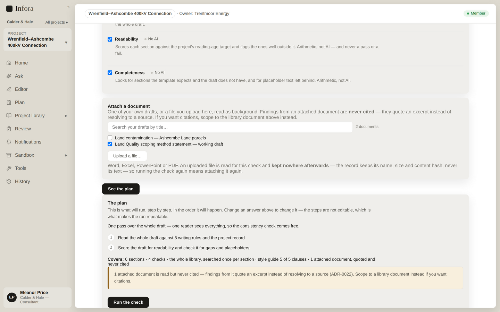
The plan reads as a workflow: this, then this
The plan opens by explaining itself: one pass over the whole draft, because it all fits in a single read — and the consistency check comes free in that shape, since one reader genuinely sees everything and there is nothing left to compare afterwards. Then the steps, numbered and threaded in the order they will happen, then what will be covered. The change is in the reading, not in the machinery: it is the same list, computed in ordinary code from the answers above, and editable by nobody. An unordered list of five sentences says these things happen; a numbered workflow says this happens, then this, which is what a person came to the page to find out. Nothing on the surface sorts it — the planner emits its steps in the order it will execute them, and a page that re-ordered them would be a second opinion about what the run does. Beside them a notice states the price of the attached document before the run rather than after it: it is read but never cited, and if citations are wanted the way to get them is to scope to the library document instead. Every caveat this plan carries is stated before the button, never under the result — a run that reported its findings and then admitted it had not looked everywhere would be degrading quietly, which is the one thing the tool must not do.
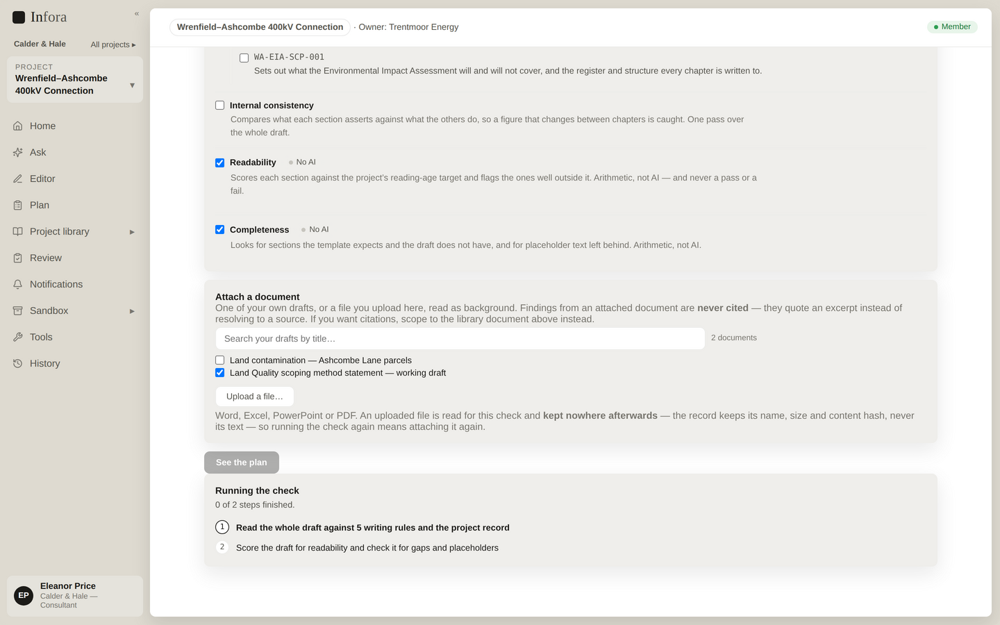
A running check shows its steps completing
The run starts and the plan’s own steps stay on screen, ticking off as each one finishes — the list a person read is the list they watch. It is not a spinner and it is not a percentage: it counts the run’s own step rows, which the engine has recorded since the skeleton, against the plan’s own step count. Counting only what the poll returned would show two of two on a run that had opened two rows of six and call it finished. Nothing about the engine changed for this; what changed is that the browser opens the run’s conversation before starting it, so it has a handle to look the run up by while the request is still in flight. And it degrades honestly: a poll that does not answer says the check is still going and the page will catch up, never that it is stuck — the run is a fact on the server, and a browser that has lost sight of it has learned something about the browser.
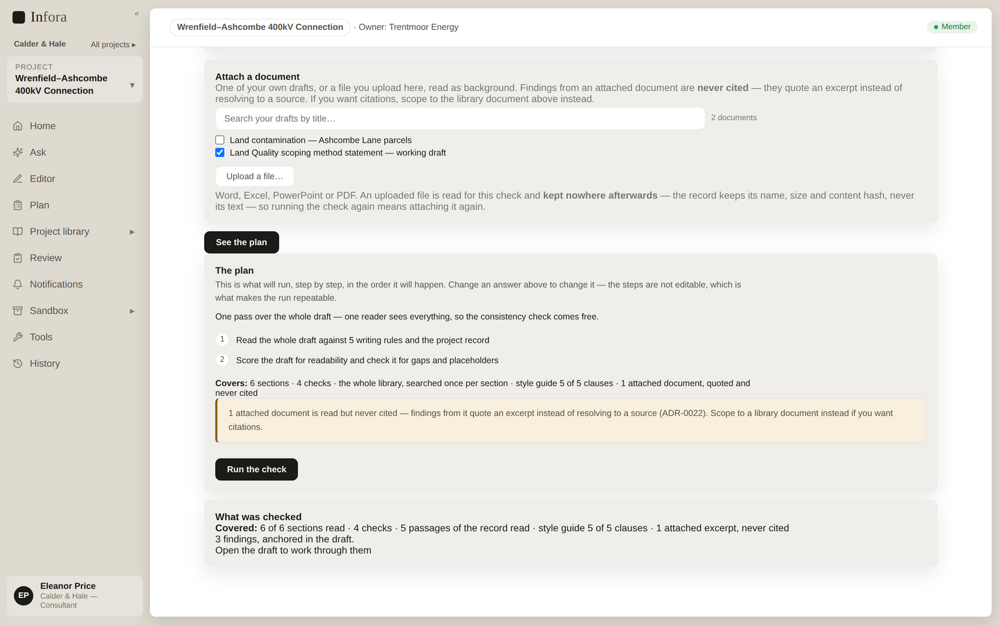
The same sentence, before and after, in one frame
The run finishes under the plan that promised it, and both sentences are visible at once: six sections, four checks, the library searched once per section, five of five style clauses, one attached document — and then six of six sections read, four checks, five passages of the record read, five of five clauses, one attached excerpt never cited. Three findings. That coverage line is not a footnote: it is the only thing that distinguishes a clean result from an unexamined one, which is why no findings here would have to be read as no findings in what was read. It also appends what the findings list cannot show — sections the library said nothing about, and suggested findings thrown away for not pointing at real text — and this run had neither to report.
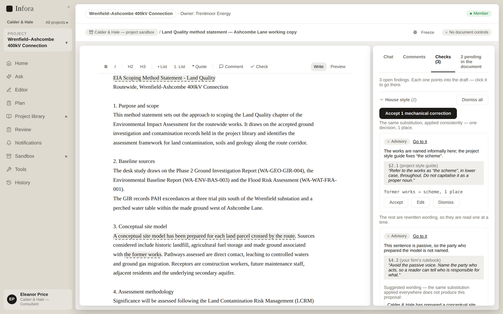
The findings are marks in the draft
Opening the draft, the findings are where they belong: underlined in the text they are about, and listed beside it under the check that raised each one. Every finding says what is wrong and shows what it rests on, and the three kinds of evidence are rendered as three different things. A quoted writing rule appears as a quotation with its clause number — §2.1 of the project style guide, §4.2 of Calder & Hale’s own manual — and deliberately never as a source chip, because a rule steers the author and asserts nothing about the scheme; only a finding grounded in the record gets a chip. Where the project’s guide and the firm’s own disagree, the project’s wins and the firm’s fills the gaps.
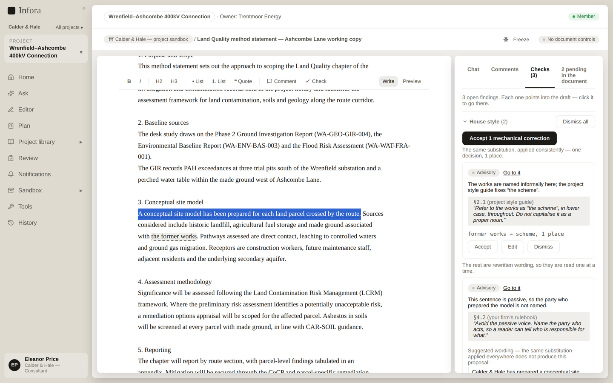
Two views of one set
Clicking an entry in the panel selects the passage it is about in the draft — here the passive sentence about the conceptual site model, highlighted in the text with its mark still underlined and the informal “the former works” underlined a few lines below it. The document carries the marks, the panel carries the list, and both are drawn from a single read: they are two views of one set rather than two lists that have to be kept in step. The link runs both ways — clicking a mark in the text opens its entry in the panel — and a finding whose text has since been edited simply points at nothing rather than at the wrong words.
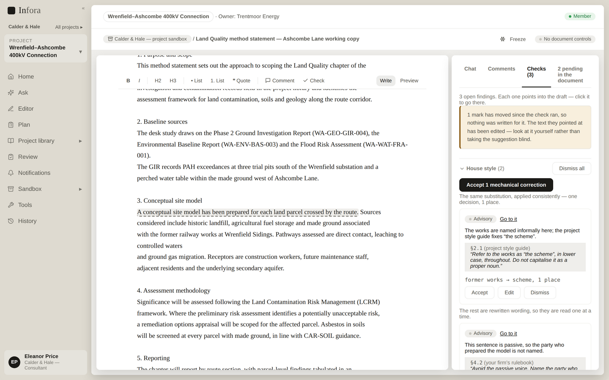
Edit the text under a finding, and the fix refuses
Eleanor rewrites the sentence herself — “the former works” becomes “the former railway works at Wrenfield Sidings”, visible at the foot of the draft — and then asks the checker to apply its own correction to it. It does not. The banner at the top of the panel says one mark has moved since the check ran, that nothing was written for it, and that the text it pointed at has been edited, so she should look at it herself rather than take the suggestion blind. The finding stays open rather than being applied to words that have changed under it. This is the degrade path’s only visible sentence, and it is the honest failure: the alternative is a fix landing quietly on the wrong text.
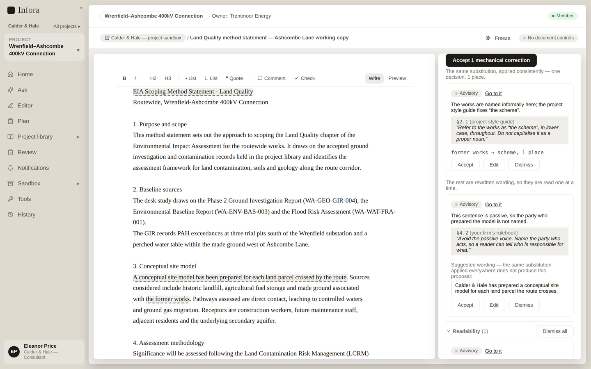
The accept-all sits above the mechanical fixes, and no rewrite gets one
With the sentence put back, the group’s layout is the ruling made visible. A mechanical correction — the same substitution applied consistently, stated in one line as former works → scheme — sits under a button that accepts the lot and says how many places that is; here it is one, and at fifty-five it would be one decision applied fifty-five times rather than fifty-five decisions. Below it the screen states in plain words that the rest are rewritten wording and are read one at a time, and the rewrite that follows has no accept-all anywhere near it. Which kind a fix is comes from the text of the fix itself, computed in code — never from a judgement made on the screen, and never from the model that proposed it.
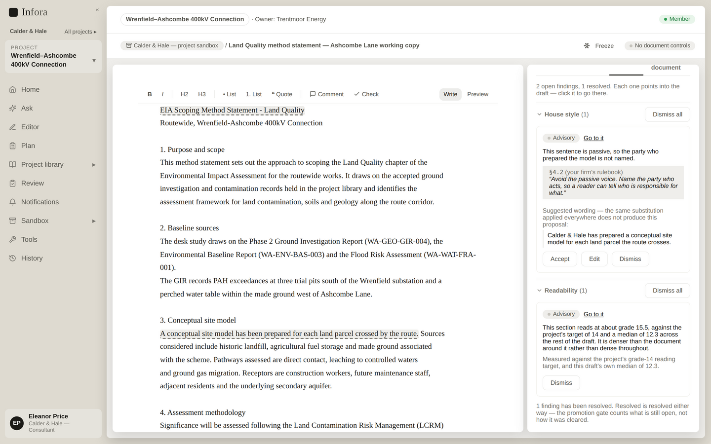
The rewrite, read one at a time
The mechanical correction is taken and gone, and what is left in House style is the one rewrite: the rule it rests on, the sentence the model proposes in its place, and three buttons — accept it, edit it into your own words, or set it aside. There is no button here that takes it unread, and there never will be: accepting new prose is not the same act as normalising a capital letter. The counter above has moved to one resolved, and the note at the foot says what resolved means — the promotion gate counts what is still open, not how it was cleared, so dismissing a finding with a reason of your own is as final as accepting it.
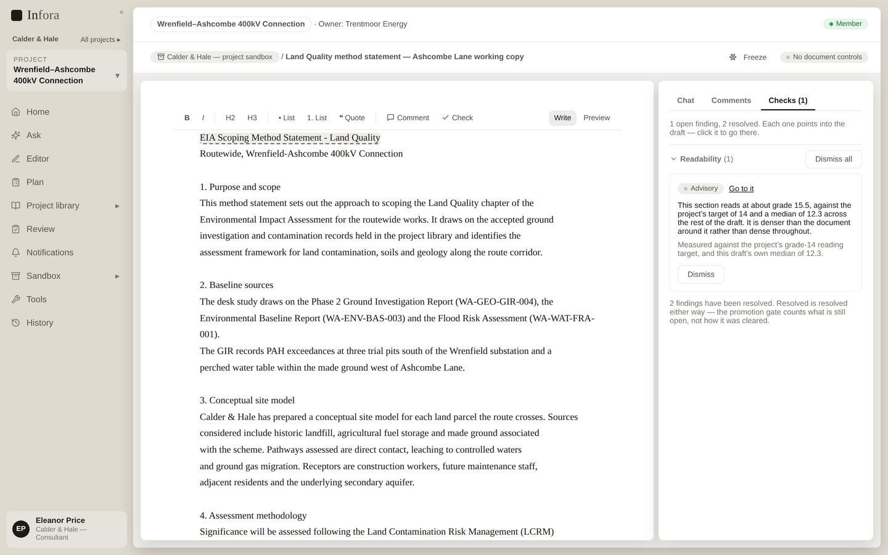
Declining a whole group is one judgement, not forty
The rewrite has been accepted and the draft now reads “Calder & Hale has prepared a conceptual site model…”, which is the paragraph in the text behind the panel. What remains is the readability finding — a grade against the project’s reading-age target and the draft’s own median, offered as a measurement and never as a pass or a fail — and above it a control that dismisses the whole group at once. Bulk dismissal takes anything and records no reason, deliberately: declining forty advisory findings from one rule is one professional judgement, and demanding forty typed reasons would buy a record nobody would ever read.